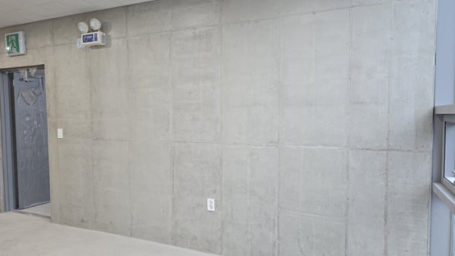

ABOUT US
회사소개
제주 노출콘크리트 보수·복원 전문 — (주)아인산업안전 · 제주도 콘채 총판
보수의 완성은 보수한 티가 나지 않는 것입니다.
제주노출콘크리트는 제주 노출콘크리트 보수와 복원을 다루는 지역 기술팀입니다. 면보수와 색상 · 질감 재현, 균열 · 하자보수부터 누수 인젝션과 액상고무 방수까지, 결함을 덮는 대신 주변 면의 질감과 색을 읽어 다시 만들어 넣는 방식으로 보수합니다. 누수는 원인과 경로를 먼저 진단한 뒤, 구조와 현장 조건에 맞는 방식으로 물의 길을 차단합니다.
해풍과 염분, 잦은 강우라는 제주의 조건은 육지와 다른 열화 양상을 만듭니다. 같은 균열이라도 원인이 다르면 공법이 달라져야 하고, 같은 색이라도 계절과 습도에 따라 다르게 발현됩니다. 제주에서 반복해 확인한 이 차이가 저희가 쌓아온 기준입니다.
- 제주 노출콘크리트면보수 · 복원 · 색상 및 질감 재현
- 특수방수누수 인젝션 · 액상고무 방수
- 제주도 콘채 총판면보수재 공급 · 기술지원
- 건축기술자보수방안 직접 검토
COMPANY
회사 정보
- 브랜드
- 제주노출콘크리트 (제주 노출콘크리트 보수·복원 전문)
- 운영 회사
- 주식회사 아인산업안전
- 자재 총판
- 노출콘크리트 면보수재 콘채 제주도 총판
- 대표자
- 김선미
- 사업 개시일
- 2016년 2월 10일
- 사업자등록번호
- 690-87-00288
- 통신판매업신고
- 제2023-제주성산-00026호
- 대표전화
- 1660-4019
- 기술상담
- 010-5638-0103
- 주소
- 제주특별자치도 서귀포시 성산읍 풍천로 142, 103호
- 등록 업종
- 노출콘크리트면보수공사업 · 방수공사업 · 시설물 유지관리 공사업 · 건축공사 · 건축자재 · 안전용품 · 전자상거래 소매업
- 전문 분야
- 노출콘크리트 면보수 · 색상 및 질감 재현 · 콘크리트 균열보수 · 누수 인젝션 · 액상고무 특수방수 · 발수 및 표면 보호
- 상담시간
- 평일 08:00 – 18:00 (현장 상담 예약제)
- 자재 공급
- 보수재 · 방수재 · 발수제 안내 · 아인산업안전 자재몰
PRINCIPLE
일하는 방식
01
사진으로 먼저 확인합니다
현장 사진을 보내주시면 표면 상태와 하자 유형을 1차로 검토합니다. 최종 보수 방법은 필요한 경우 현장 확인 후 결정합니다.
02
설명할 수 없는 시공은 하지 않습니다
왜 이 재료인지, 왜 이 순서인지 먼저 정리한 뒤 견적을 냅니다.
03
색과 질감은 승인 후 진행합니다
시험 시공과 건조 확인을 거쳐 승인을 받은 뒤 전면 작업에 들어갑니다.
04
기록을 남깁니다
시공 전후를 기술 기록으로 정리해 공개합니다. 다음 현장의 기준이 됩니다.